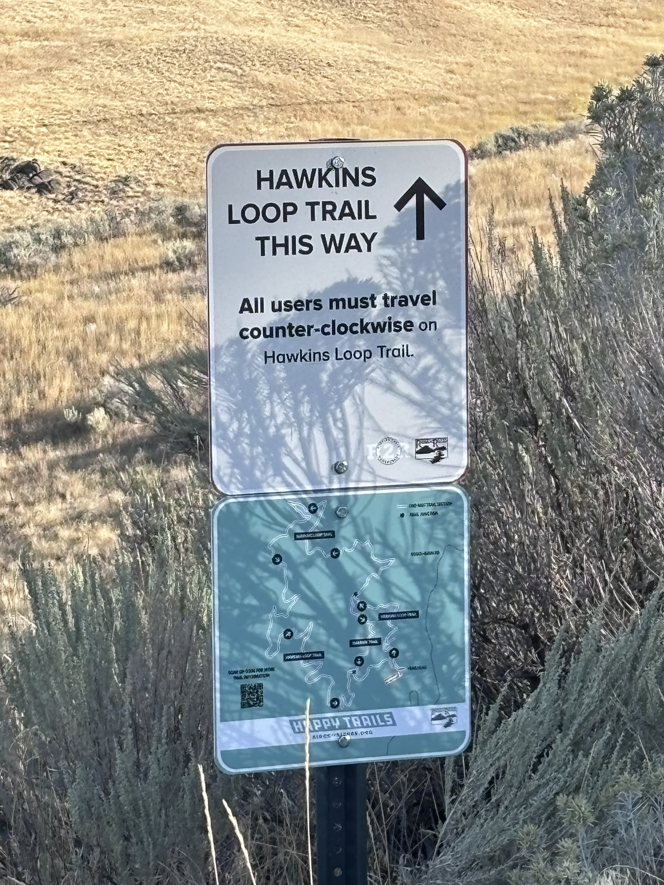

Sometimes the best places worth the trip aren’t across the country — they’re right in your own backyard. Last Saturday, my son, his girlfriend, and I headed up toward Bogus Basin and stopped at Hawkins Range Reserve, a spot tucked into the Boise Foothills that feels surprisingly remote for being only about 40 minutes from home.

We chose the longer 5.7-mile loop, one of two trails in the reserve (the other is a shorter 2.1-mile loop). The trail is a directional, counterclockwise single-track trail, and it’s rated moderate in difficulty. This trail offers a mix of rolling hills, granite formations, and wide-open views of Boise and the foothills. According to OnX Backcountry, it has about 395 feet of elevation gain.
For me, it was the longest run I’ve done in about a year – so it was a bit of a workout. That said, the trail is well-built and gives you that perfect blend of scenery.
Trail at a Glance

If you’re feeling ambitious, you can combine both loops for a total of about 8 miles, which makes for a great longer run or hike.

🚗 A Note on the Drive Up
The road to Hawkins Range Reserve is narrow, winding, and full of blind corners. Some drivers get a little too eager on that climb toward Bogus Basin, so take it slow. We saw multiple deer along the roadside, so staying alert is important – especially early in the morning or near dusk.
🎥 Want to See the Trail?
I put together a short video of the experience – if you want to see what the trail looks like, you can check it out through the link below. It’s a great reminder that you don’t have to travel far to find great destinations!
Hawkins Range Reserve is a good example of what we’re looking for at Land & See Travel: real places, real experiences, and trips that don’t always require a long drive or a big travel budget.
← Back to Land Travel